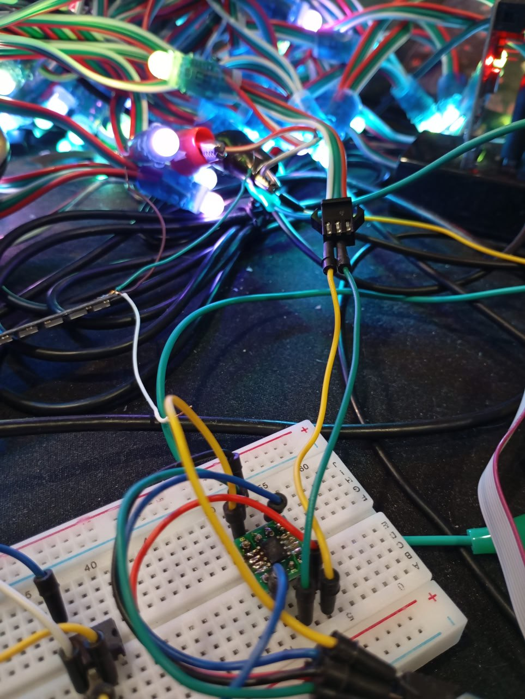
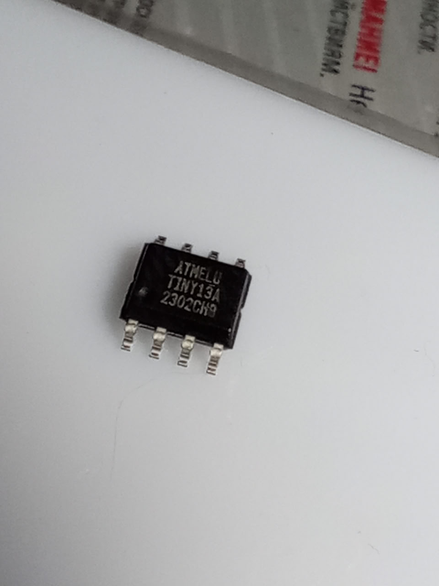

2025-12-16
21:59
Writing | ################################################## | 100% 0.23 s
avrdude: 330 bytes of flash written
avrdude: verifying flash memory against ./build/main.hexВ воскресенье, когда смотрел на вывод avrdude - я сначала не понял, а потом как понял, что размер прошивки меньше килобайта.
А значит я смогу применить вот этих крохотуль, которых когда-то, непонятно для чего, приобрел. Attiny13a, настало ваше время!
#avr #attiny #ws2812

21:59
